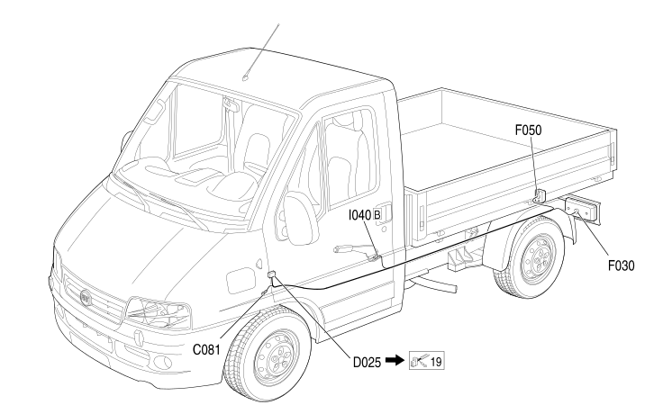

23 LEFT LONGITUDINAL
- Path
- Electrical equipment > 2 WIRING > 23 LEFT LONGITUDINAL
- Kind
- wiring harness
- Applies to
- all engines; all production periods; only with equipment: Chassis cab
- Interactive page
- https://sloeber94.github.io/elrnDB-fDct/en/#/244002154
Applies to: all engines; all production periods; only with equipment: Chassis cab

Topics that link to this page (20)
- C030 LEFT REAR EARTH (LEFT LONGITUDINAL)
- C030 LEFT REAR EARTH (LEFT LONGITUDINAL)
- C030 LEFT REAR EARTH (LEFT LONGITUDINAL)
- C081 LEFT REAR LIGHT CLUSTER EARTH (LEFT LONGITUDINAL)
- D025 DASHBOARD/LEFT REAR COUPLING (LEFT LONGITUDINAL)
- D025 DASHBOARD/LEFT REAR COUPLING (LEFT LONGITUDINAL)
- D025 DASHBOARD/LEFT REAR COUPLING (LEFT LONGITUDINAL)
- D025 DASHBOARD/LEFT REAR COUPLING (LEFT LONGITUDINAL)
- D025 DASHBOARD/LEFT REAR COUPLING (LEFT LONGITUDINAL)
- D152 LEFT REAR/LEFT SWING DOOR COUPLING (LEFT LONGITUDINAL)
- D162 OPTIONAL DASHBOARD/LEFT REAR COUPLING (LEFT LONGITUDINAL)
- D162 OPTIONAL DASHBOARD/LEFT REAR COUPLING (LEFT LONGITUDINAL)
- D162 OPTIONAL DASHBOARD/LEFT REAR COUPLING (LEFT LONGITUDINAL)
- D178 LEFT REAR/REAR SPEAKER AND REAR CURRENT SOCKET BRIDGE COUPLING (LEFT LONGITUDINAL)
- E048 REVERSE GEAR ENGAGEMENT AUDITORY WARNING (LEFT LONGITUDINAL)
- F030 LEFT REAR LIGHT CLUSTER (LEFT LONGITUDINAL)
- F030 LEFT REAR LIGHT CLUSTER (LEFT LONGITUDINAL)
- F050 LEFT NUMBER PLATE LIGHT (LEFT LONGITUDINAL)
- I040B HANDBRAKE SWITCH (LEFT LONGITUDINAL)
- I040B HANDBRAKE SWITCH (LEFT LONGITUDINAL)